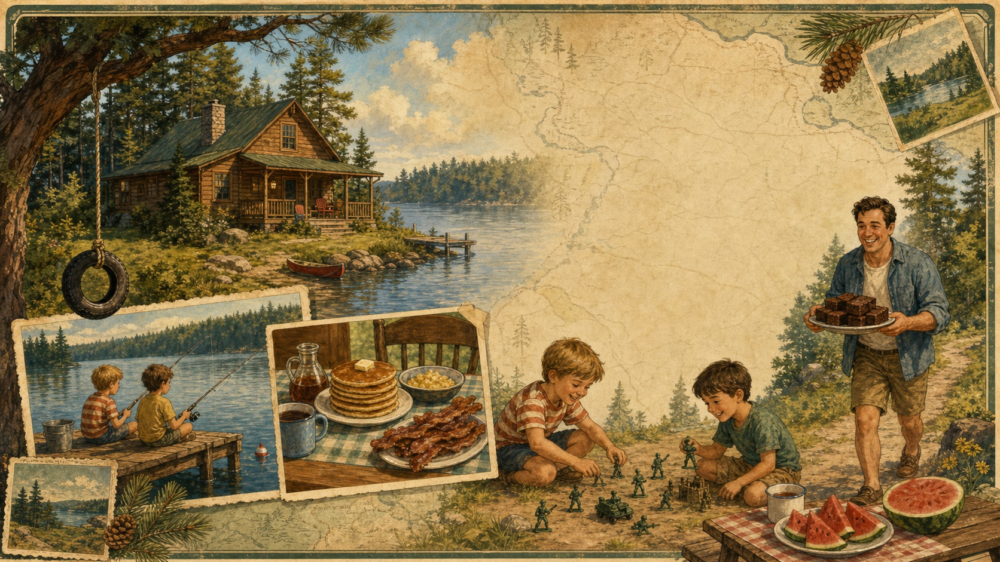

Why We're Going
Not just a drive. A return trip.
Greg and Tim heading back to see Mom. Christina seeing this part of the country and the family cabin for the first time. Aiden back to see Grandma. Old memories meeting the rebuilt cabin, including the black bears that apparently keep showing up in every generation's cabin lore.

Lake Days
Back then: fishing, water, cooking what got caught, lake air stuck in the memory.
Summer Table
Watermelon, pancakes, eggs, bacon, and cabin mornings that somehow stay perfect.
Dirt Road Battles
Tim and Greg, little plastic army men, BB guns, firecrackers, last man standing.
Uncle Scott
Secret fudge recipe arrival. A tiny family legend, and exactly the kind of detail to keep.
Uncle Todd
Greg remembers Uncle Todd roughhousing, playing tricks, and once trying to pack little Greg into a piece of luggage.
Tire Swing
Back then: rope from the tree, swing out over the water, let go, splash.
Bear Country
Baby bear, big bear, bike escape, outhouse sprint. Black bears are officially part of the cabin mythology.